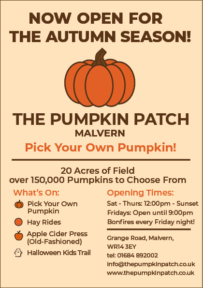
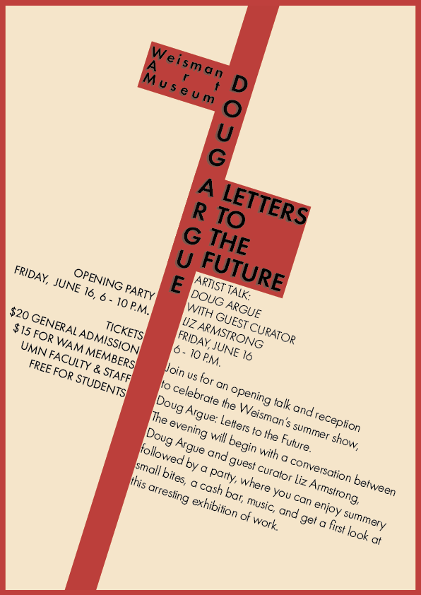
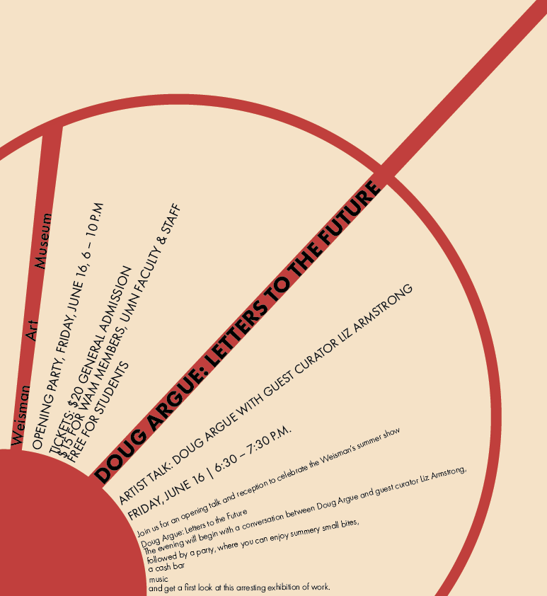
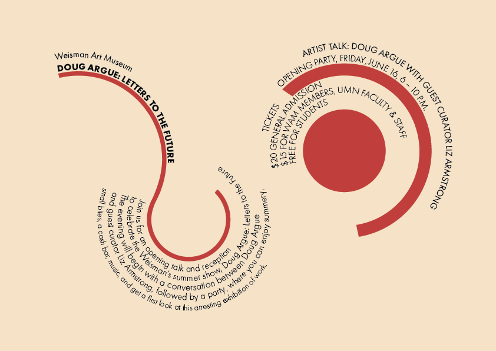
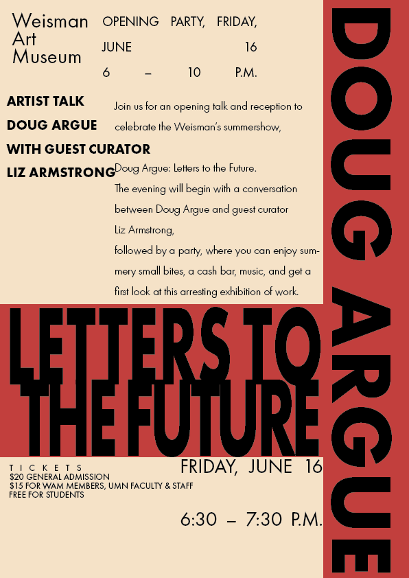
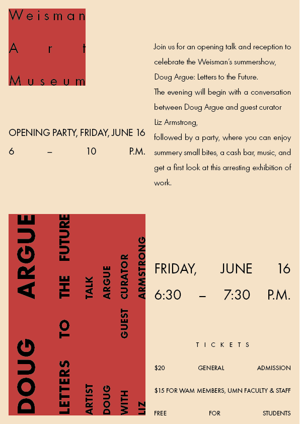
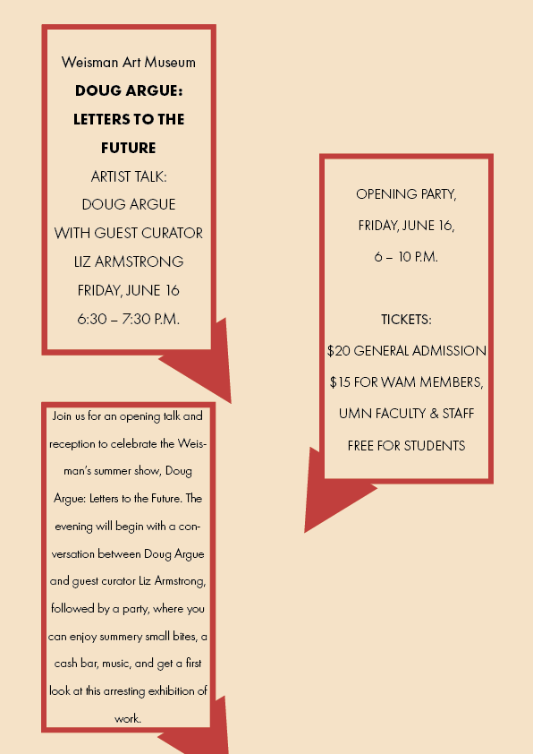
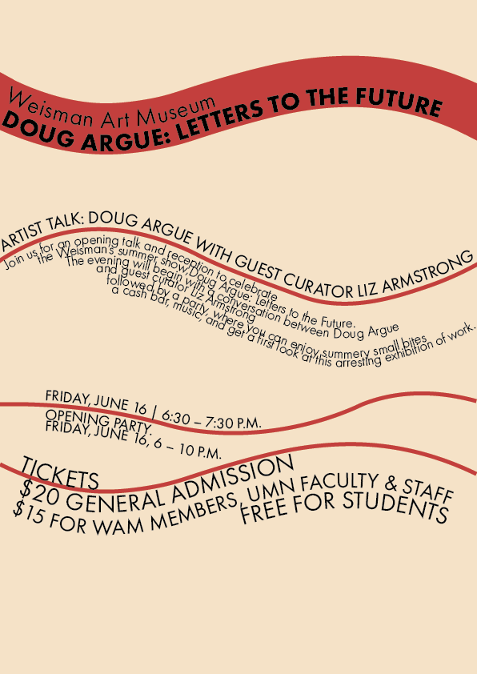
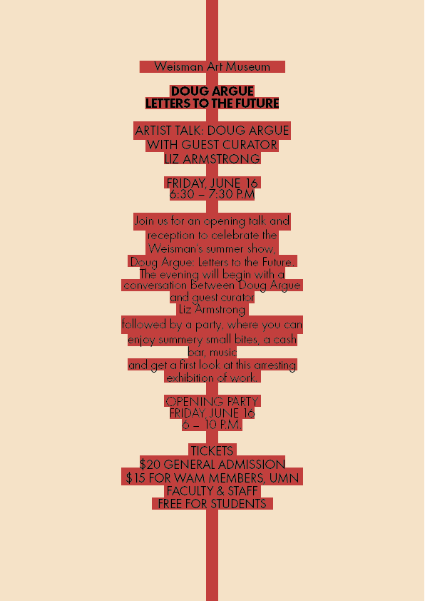

CARP Task
In this redesign, I applied the four core CARP (Contrast, Alignment, Repetition, Proximity) principles. I utilised contrast by choosing a bold, easy to read typeface and used warm colours against a light background to ensure visual hierarchy and draw attention to key information such as the opening times. Alignment was used consistently with a more centered layout and a clean split on the y-axis that creates a more coherent and easy to follow structure. I maintained repetition through the use of a consistent typeface and repeated colour scheme. I applied proximity by grouping related content (event details, timings, and descriptions) closely together for easy readability. Overall, the updated design feels more modern, legible, and engaging compared to the original flier.
Typographic Systems
Axial
Radial
Dilatational
Random
Grid
Modular
Transitional
Bilateral
This task allowed me to explore the Weisman Art Museum content through eight different typographic systems, those being Axial, Radial, Dilatational, Random, Grid, Modular, Transitional, and Bilateral. Each layout was designed to reflect the principles of its respective typographic style while preserving an underlying, consistent visual identity throughout the series. I kept the colour and type choices consistent to create visual cohesion across the series while also allowing for the focus to be more on the typographic system, while the structure of each layout varied to reflect the typographical style of each poster, emphasizing different compositions. This task helped me understand how different layouts affect tone and communication in design.
Citations
CARP Poster
Adobe Fonts. (n.d.) Montserrat. [Font]. Adobe. Available from: https://fonts.adobe.com/fonts/montserrat [Accessed 10 July 2025].
Typography Posters
Adobe Fonts. (n.d.) Futura PT. [Font]. Adobe. Available from: https://fonts.adobe.com/fonts/futura-pt [Accessed 10 July 2025].
Website
Google Fonts. (n.d.) Share Tech Mono. [Font]. Google. Available from: https://fonts.google.com/specimen/Share+Tech+Mono [Accessed 10 July 2025].